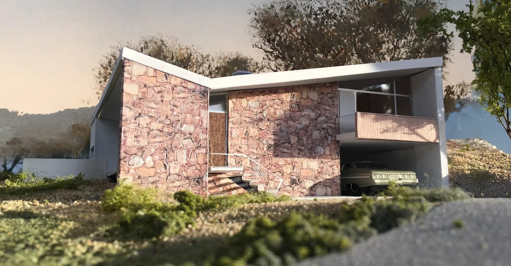

David Webb: Model Architecture
21 October 2020
Just as the COVID19 pandemic was creating upheaval and uncertainty with regards to border closures and travel restrictions, Canberra Modern was lucky enough to spend sometime at Joe’s Bar with fellow mid-century modern design fan, architectural model maker and member of the Palm Springs Modernism Week committee, David Webb. Over a few drinks we asked him about his fascinating work and what he has learnt from a lifetime passion for mid-century modern architecture.
Canberra Modern (CM): Many mid-century modern fans would be envious of the fact that you live in Palm Springs part of the time and in Australia part of the time. Tell us a bit about your background and your work in Palm Springs.
David Webb (DW): After many years living in Australia, in 2009 I moved back to Los
Angeles. I was working on a model of [Richard] Neutra’s Kaufmann desert house and
went out to Palm Springs to see the completed restoration. While I was out there I
found a condominium for sale in Canyon View Estates designed by Palmer & Krisel in
1963. It was in need of repair and I was able to afford it.
My new neighbors were involved in Modernism Week. I had attended lectures on previous visits to Palm Springs and they introduced me to the organiser, Mark Davis. He asked me if I'd like to become involved. For the past eight years I have facilitated and introduced the lectures. During that time I have fallen deeper and deeper in to the rabbit hole that is architecture, design and preservation!
CM: What do you like about mid-century modern design in general and who are the architects that inspire you?
DW: When I was about twelve, I came across the famous photograph of [Frank Lloyd
Wright’s] Fallingwater. I think it was in a 'Life' magazine. That was the start
of a lifelong interest in architecture. I have visited the house many times and
when I was in my early thirties I built a crude model of it.
Arguably, I think Wright’s DNA can be found in the work of the best architects of the
twentieth century. I think it is the scale and, most importantly, the connection to the
landscape. I had the opportunity to visit several houses designed by lesser known Wright
apprentices a few years back. I’ve also spent time in several Neutra houses. The
overwhelming feeling when you walk through the door of these houses is that you are
'home'.
My interest in Wright led me to Walter Burley Griffin and Marion Mahony. When I was living in Sydney I went to look at a house in Castlecrag that I was told had been the original display home. There was a plan to restore it and build a second residence on the lot. The architect chosen for this task was Bruce Rickard. Before work commenced they staged a small exhibition of his work. His early houses were very 'Wrightian' but I particularly liked a small house he had designed for himself and his family in Cottage Point [NSW].